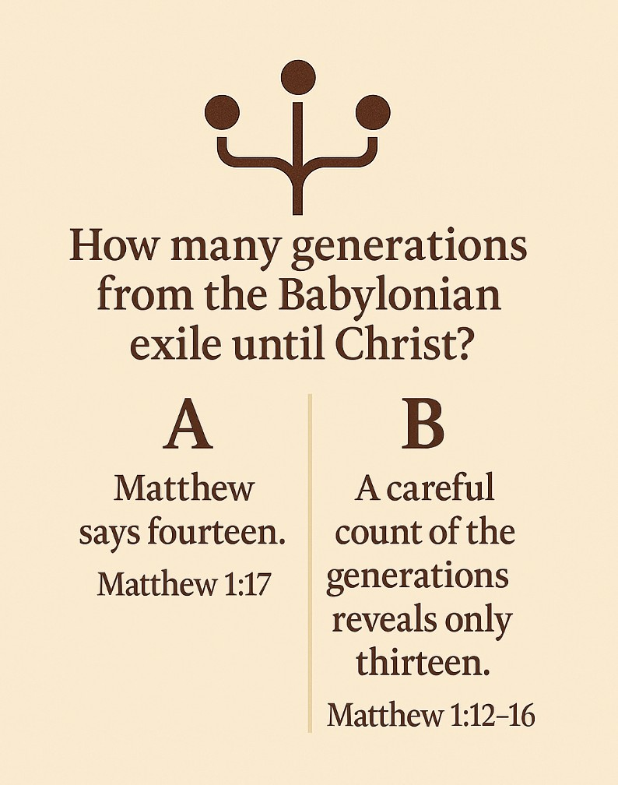
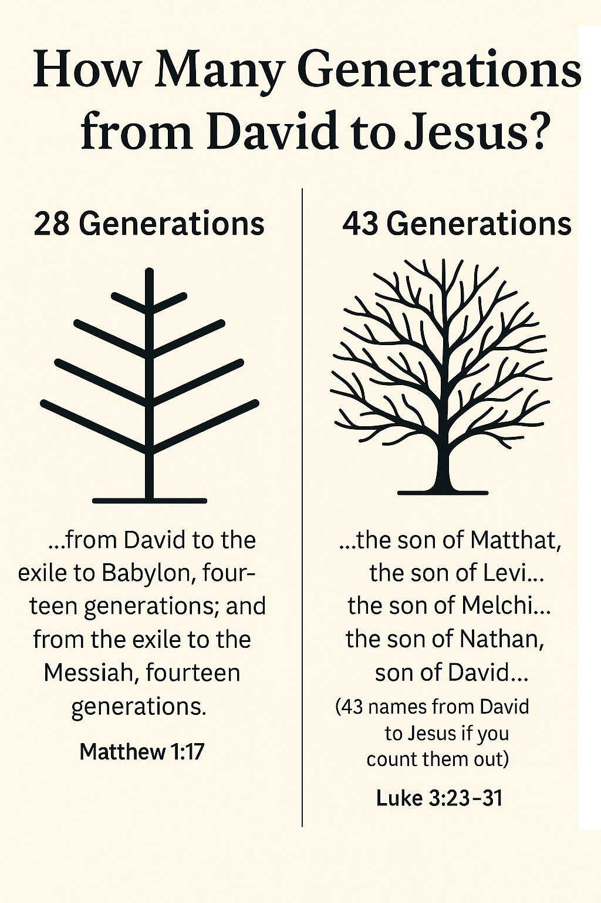
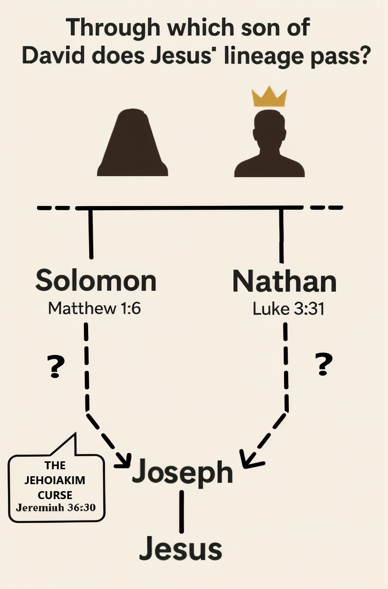
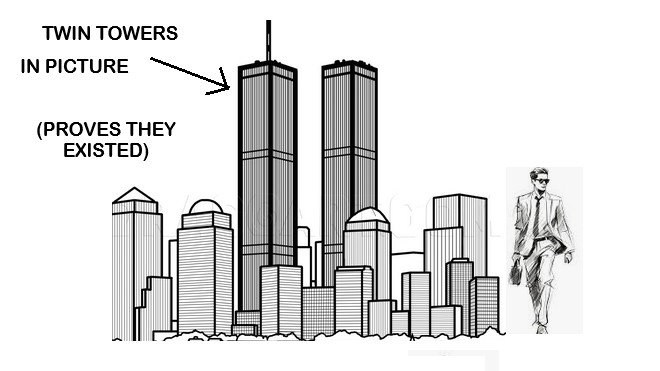

Introduction: Erased Fingerprints
— The Words of Jesus
Reading those three verses is like scrolling through your social media feed when a quote stops you dead in your tracks. Not because it's controversial or shocking, but because it's uncomfortably familiar ... like hearing your own voice on a recording and realizing you sound nothing like you thought you did.
Those three verses above? They're Jesus' own words, yet they read like forbidden text in today's Christian landscape. Read them again—slowly this time—as if you've never heard them before. Strip away two thousand years of theological white noise, the hum of creeds and worship songs that have been playing in the background of your spiritual life like elevator music.
What emerges is unsettling. In Jesus' own mouth, the spotlight doesn't fall on Him ... it falls through Him, landing squarely on His Father. The pattern is there, hiding in plain sight like a watermark that only appears when you tilt the page against the light.
For decades, I was like everyone else: breezing past these clues with the mental equivalent of a polite nod. Of course Jesus honors the Father, I told myself. But surely He shares the same divine resume, right? My ability to see words for what they actually said had been hijacked ... not by malice, but by something more insidious: familiarity. Sunday school memories, thousands of sermons, worship lyrics that had been downloaded into my spiritual operating system like software updates.

Then came the moment that changed everything.
It was 1903, and scholar Allan Hoben was doing what scholars do: cataloguing ancient citations, lost in the kind of tedium that occasionally births revelations. While poring through the writings of Irenaeus, a second-century bishop and premier early Church Father, Hoben stumbled across something that would have made his coffee go cold.
Irenaeus was quoting Luke's Gospel, and what he quoted was this:
Seven English words. Eight Greek words. ONE MASSIVE PROBLEM.
When you hunt through every modern translation of Luke's Gospel, scouring verse by verse... nothing. The verse has vanished ... disappeared like a deleted tweet, leaving behind only the ghost of Irenaeus' testimony and the creeping suspicion that someone, somewhere, had taken an eraser to sacred text.
This wasn't just a missing puzzle piece. This was discovering that the puzzle you've been working on for years has been modified ... pieces removed, edges smoothed, the picture subtly altered while you weren't looking.
The opening verses I showed you (Jesus clearly distinguishing himself from his superior, divine Father) combined with this disappearing verse from Luke launched me into the investigation you now hold: an investigative journey through manuscripts that reads like a detective novel, except the evidence is written in ink that's two thousand years old.
BRACE YOURSELF. Because what I discovered will challenge everything you thought you knew about the most famous man who ever lived.
The pattern that emerged was like discovering that your favorite novel had been secretly edited by someone with an agenda. Whenever a passage presented Jesus as UNDER the Father, as SUBORDINATE TO the Father, later scribes found ways ... sometimes surgical, sometimes brutal ... to nudge him upward until he shared the very throne of God Himself.
Think of it like Instagram filters applied to reality. The original photo ... Jesus as the Father's devoted son ... got filtered, edited, and enhanced until it became SOMETHING ELSE ENTIRELY: Jesus as co-equal with the Father, Jesus as pre-existent Creator, Jesus as the cosmic Christ of Paul's imagination.
And yet, miraculously, a few verses survived the editing process. Like digital artifacts in a Photoshopped image, they reveal the original beneath the layers of theological enhancement.
I don't say this lightly. This discovery rattled me to my core, and I expect it may rattle you too. If you feel your heart rate rising, if your palms are getting sweaty, breathe. I've been there. I've whispered into the darkness, "Father, am I being led astray?" And more than once, I've felt Him nudge back with something that felt like a cosmic wink: "Follow the truth ... wherever it leads. I'm not afraid of honest questions."
Don't misunderstand me. I've witnessed the power of scriptural texts firsthand: the kind of power that heals bodies, calms anxious minds, and turns lives around like a spiritual U-turn. I've prayed for people in Jesus' name, been prayed for myself when I was at death's door, and experienced miraculous healings that defy medical explanation. I once prayed for someone who was almost totally deaf, in Jesus' name, and she began to hear!
But now, those same scriptures lay before me like a sacred mystery. The text sprawled across my desk like a priceless artifact, yet everywhere I looked, I saw smudges, erasures, and suspicious edits that betrayed the hands of those who had copied these texts over centuries. My task ... and now yours ... is to dust for fingerprints.
Before we dive into the evidence, let's step back and understand the battlefield we're entering. Imagine trying to explain to someone from the 1950s what a smartphone is ... except the someone is you, and the smartphone is the most complex theological question in human history: Who exactly was Jesus?
People have been wrestling with this question for two millennia, and the answers have been... creative. Was he just a human? Was he God in disguise? Did he have a human body but divine "superpowers" downloaded into his soul? If so, what was the ratio: 50% human, 50% divine? 70-30? 99.9% human with a sprinkle of divine essence?
The theological debates that followed Jesus' death make today's social media arguments look like polite dinner conversation. These weren't academic discussions over coffee ... people fought and died defending their particular take on who Jesus was.
Take Docetism, for instance ... the belief that Jesus only appeared to be human, like a divine avatar walking among us. This wasn't some fringe theory cooked up by conspiracy theorists. This was mainstream thinking among many early Christians, and some scholars argue that Paul's language in the first few verses of Phillipians 2 could be interpreted as having Docetic overtones.
Look at what Paul writes in Philippians 2:
[was] made in human likeness.
… being found in appearance as a man
One could read this as Paul suggesting Jesus was God taking on human form: a divine being who assumed human likeness for the sake of the mission. The phrases "made in human likeness" and "found in appearance as a man" can be interpreted to mean he only appeared to be human, while underneath was pure divinity. Whether Paul intended a fully Docetic reading remains debated among scholars, but the language he chose certainly left room for such interpretations in the decades that followed.
But here's where it gets interesting. The Apostle John, in what might be the most scathing theological takedown in the New Testament, absolutely destroys this view in 1 John 4:2-3. John is crystal clear: anyone who doesn't acknowledge that Jesus came "in the flesh": as a real, actual human being—is not just wrong, they're false and "not from God." He goes even further, claiming these ideas are shaped by an "ANTI-CHRIST SPIRIT."
If this is not a direct assault on Paul and what he wrote in Phillipians 2, then I don't know what is. You wouldn't be blamed for thinking he was almost calling Paul an Anti-Christ!
Talk about theological drama. We're talking about two pillars of early Christianity essentially calling each other heretics.
Eventually, Christianity settled on what might be the most mind-bending theological concept ever conceived: the paradox that Jesus is simultaneously 100% HUMAN and 100% DIVINE. Don't think about it too hard ... that's the official recommendation for keeping excruciating migraine headaches to a minimum. Otherwise, you might find your head spinning like a theological roulette wheel.
This fully-God, fully-Man view was codified into the NICENE CREED AROUND 325 CE: basically the theological equivalent of a constitutional amendment that's been embedded in church doctrine ever since.
But here's where the plot thickens: when exactly did Jesus get his divine status? Was he born with it ... popping out of the womb already packing divine credentials? Did he earn it at his baptism, like some kind of spiritual promotion ceremony? So was he just a regular human with Joseph as his biological father, who got adopted by God at his baptism ... a view known as "ADOPTIONISM"?
And once he was divine, what was his relationship to the Father? Was he God's equal partner in the cosmic business, or was he more like a junior executive who reports to the CEO? Was he subordinate to the Father only during his earthly mission (as Paul suggests in Philippians 2:6-8), or was he always subordinate to the Father?
These aren't just theological nitpicks. As we'll discover, these ideological wars weren't fought in some distant theological ivory tower. They were fought in the very manuscripts that became your Bible. The victors didn't just win debates ... they rewrote history.
Uncovering the Clues
This book will help us get to the good stuff: the evidence. This isn't late-night conspiracy theory material or theological fan fiction. We're talking about concrete, verifiable clues that create a trail of breadcrumbs leading us back to the original Jesus.
We're trying to discover his UNTAINTED teachings because there is no question there is WISDOM, TRUTH and POWER in those words that go beyond the insecurities of institutions and governments. There is no doubt in my mind as to his divinity. He kept pointing to us to alert us to our own divinity.
"We're not stoning you for any good work, but for blasphemy, because you, a mere man, claim to be God."
— John 10:32-33
But here's where it gets interesting. Instead of backing down or clarifying that he's not claiming to be God, Jesus quotes Psalm 82:
— Psalm 82:6 (quoted by Jesus)
He's basically saying, "Look, if Scripture calls you gods, why are you so upset when, according to you, I make statements suggesting the same about myself?"
That's the Jesus I'm talking about: the one who addressed the question about a perceived divinity claim, by pointed to our shared divine nature. It seems to me that, at least in this particular interaction, he wasn't trying to elevate himself above us; he was trying to wake us up to who we really are. But let me not get ahead of myself.
I already hear you screaming, "But what about when he said 'Before Abraham was, I AM...' in John 8:58!" Surely he was calling himself God in this verse!"
— John 8:58
Let me say the following: when you dig into the manuscript evidence, something interesting emerges. This verse appears nowhere in the earliest Christian writings ... not in Paul, not in the other Gospels, not even in the earliest Church Fathers who were obsessed with proving Jesus' divinity. It only shows up in John's Gospel, which was written decades later and contains several passages that read like theological additions rather than historical accounts. The fact that this explosive claim about pre-existence appears in isolation, without any corroboration from earlier sources, suggests it might be exactly the kind of textual enhancement we'll be investigating throughout this book.
Think of what follows as the theological equivalent of a textual investigation. Each clue tells a story, and together they paint a picture that's impossible to ignore.
- CLUE NO. 1: Bible Contradictions (Internal)
Here's the thing about contradictions: most people treat them like bugs in the system, glitches to be ignored or explained away. But what if they're actually features? What if the contradictions are like cracks in a wall that reveal the original structure beneath the plaster?Bible contradictions are invaluable gifts when you're hunting for truth. They're the places where the editing process wasn't quite smooth enough, where the seams show through. Let me show you what I mean with four examples that will make your head spin:
- Bible Contradiction Example 1: The Missing Generation
Matthew 1:17 makes a bold claim: there were exactly fourteen generations from the Babylonian exile to Christ. It's a neat, symmetrical summary that sounds like divine mathematics: "…there were fourteen generations in all from Abraham to David, fourteen from David to the exile to Babylon, and fourteen from the exile to the Messiah." Beautiful symmetry, right?But here's the problem: when you actually count the names listed in Matthew 1:12–16, you get thirteen generations, not fourteen. One is missing. It's like ordering a dozen donuts and only getting eleven.
So where did the fourteenth generation disappear to? Some apologists scramble to explain this away ... maybe "Jesus" is counted twice, or maybe it's meant to be symbolic rather than literal. But Matthew doesn't say "about fourteen" ... he says exactly fourteen. This isn't just a math error; it's like discovering your bank statement doesn't add up, and the bank says, "Well, it's close enough."
- Bible Contradiction Example 2: The Genealogy Wars
Here's where it gets really interesting. How many ancestors did Jesus actually have between King David and himself? According to Matthew 1:17, there are exactly 28 generations from David to Jesus. But flip over to Luke 3:23–31, and suddenly the family tree explodes to a whopping 43 generations!That's not a rounding error ... that's 15 extra ancestors. It's like one genealogy saying you have 28 cousins and another saying you have 43. Someone's definitely wrong, or someone's definitely lying.
But wait, there's more. It's not just the count that's off ... the actual names in the two lineages are almost completely different. It's like two people claiming to be your family historians, but they can't agree on who your grandparents were.
Matthew 1:6 traces Jesus' lineage through Solomon, the royal son of David ... the kingly line that makes sense for a Messiah. But Luke 3:31 traces it instead through Nathan, another son of David who never ruled as king.
Both can't be biologically correct ... unless Jesus had two completely different family trees, which would be... unusual, to say the least.
Some try to reconcile this by claiming Matthew gives Joseph's LEGAL line while Luke gives MARY'S BIOLOGICAL line. But there's no evidence for this in the text itself ... it's pure speculation designed to paper over a massive contradiction.
- Bible Contradiction Example 3: The Cursed King Problem
This one is the theological equivalent of a pothole so big you could drive a truck through it. Can Jesus inherit David's throne if one of his ancestors was cursed by Yahweh to NEVER have a descendant sit on it?In Luke 1:32, the angel Gabriel declares that Jesus will be given "the throne of his father David," fulfilling a major Messianic prophecy. But there's a snag. According to Matthew 1:11 and 1 Chronicles 3:16, Jesus is descended (through Joseph's line) from Jehoiakim, a king whom Yahweh curses in Jeremiah 36:30, saying that none of his descendants will sit on David's throne.

Think about this: Yahweh himself puts a divine restraining order on Jehoiakim's descendants, saying none of them can ever sit on David's throne. But then Jesus ... who's supposedly descended from Jehoiakim ... claims the throne anyway. It's like having a restraining order against you and then showing up at the person's house claiming you live there.
As we saw in the previous example, some try to resolve this by saying Jesus wasn't Joseph's biological son (thus avoiding the curse), or that Luke's genealogy represents Mary's line, which bypasses Jehoiakim entirely. But both solutions are speculative workarounds that aren't explicitly stated in the text.
This isn't just a theological inconvenience ... it's a genuine contradiction between prophetic promise and ancestral disqualification. What's going on here?
Why am I pointing out these contradictions? Three reasons:
1. It's crucial to understand that biblical texts aren't inerrant ... they were written by humans who made mistakes, had perspectives, beliefs, and agendas.
2. The biblical command to "search out" and "rightly divide" is more relevant than ever when we're dealing with texts that contain obvious contradictions.
3. These contradictions are telling indicators that lead us to dig for the deeper truth hidden in the texts we have.
For a more comprehensive (and illustrated) exploration of Bible contradictions and how they help us uncover truth, check out "101 Illustrated Bible Contradictions: And 12 Keys To Unlock The Truths These Reveal."
- Bible Contradiction Example 1: The Missing Generation
- CLUE NO. 2: Manuscript Differences
Imagine you're comparing two copies of the same document: say, a contract or a will ... and you discover they're not identical. Some words are different, some sentences are missing, some phrases have been added. That's exactly what we find when we compare the oldest biblical manuscripts.Verse by verse, word by word, the differences pile up. It's like discovering that your favorite book has multiple versions, and no one told you which one is the "real" one.
Remember we're looking for clues which serve as breadcrumbs to lead us to Jesus and his real, authentic teachings.
- CLUE NO. 3: Quotes from Early Church Fathers
This is like having a time machine. When Church Fathers quote biblical verses that read differently than our modern versions, we get a window into earlier text forms. The Irenaeus quote from earlier is a perfect example ... he's quoting a verse that no longer exists in our Bibles.It's like finding an old photograph where someone is standing in a place that no longer exists. The photo proves the place was there, even if it's gone now.
 - CLUE NO. 4: Added Texts
Ever read something and thought, "This doesn't sound right"? Like when a friend's text message suddenly switches tone mid-conversation, or when a paragraph in a book feels like it was written by a different person? That's exactly what we find in the Bible.Abrupt transitions, sudden changes in writing style, verses that jar with what comes before or after ... these are like mismatched bricks in an ancient wall, revealing where later additions were inserted.
- CLUE NO. 5: Straight-up Historical Admissions
Sometimes, the most revealing testimony comes from the people who were doing the editing. Fourth-century theologian Gregory of Nyssa (a Cappadocian Father) openly admitted that he had to exchange "Jewish dogma" for Christian formulations about Christ.It's like a politician admitting on tape that they changed their story to fit their agenda. You can't get more explicit than that.
Each of these clues tells its own story; together they weave a tapestry of Jesus's gradual promotion from anointed teacher to Almighty God (exclusive Almighty God, I should add) ... a promotion that happened not through divine revelation, but through human editing.
These five clues will take us down different rabbit holes, each revealing a different aspect of how Jesus was gradually transformed from the Father's devoted son into something else entirely. Scholars have documented a clear pattern: Jesus's divine status was progressively moved backward in time, through three major stages:
Stage 1: Early Jesus: Subordinate and Exalted at a Specific Moment
The earliest Christian writings present Jesus as becoming divine at a particular point ... either at his resurrection or baptism. The Father alone is Creator; Jesus is the devoted Son who gets "adopted" or "exalted" by God.
Examples: Early baptism texts reading "Today I have begotten you" (Psalm 2:7), and Father-Creator language that once appeared in Luke but has since vanished from our Bibles.
Stage 2: Transitional Jesus: Divine from Birth, Still Subordinate
As theology developed, Jesus's divine status moved earlier ... to his conception through virgin birth. He's now divine from Day One, but still clearly subordinate to the Father as Creator.
Examples: The virgin birth narratives in Matthew and Luke, which appear late in the manuscript tradition. Some ancient manuscripts still read "Joseph begat Jesus," later changed to protect this emerging theology.
Stage 3: Cosmic Jesus: Pre-existent and Co-equal with the Father
Finally, Jesus's divine status is pushed back before creation itself. He becomes the cosmic Christ who created the universe alongside (or as) the Father ... pre-existent, eternal, and fully equal.
Examples: Paul's letters declaring "all things were created through him" (Colossians 1:16), and John's prologue presenting Jesus as the eternal Word who "was God" from the beginning.
We'll explore the specific textual mechanisms of this elevation throughout this book ... the deletions, additions, and careful rewording that moved Jesus from devoted servant to divine co-Creator.
This isn't conspiracy theory territory ... these are documented textual shifts visible in the ink itself, preserved in the manuscript record for anyone willing to look.
Still, a fair-minded believer might ask, "But couldn't God have guided those changes?" Of course He could ... yet the Bible we cherish also commands us to test everything and hold fast to what is good. If we never look, we never test. And if we never test, we never discover what's real.
This book will follow the breadcrumbs through four PARTS:
At each stop along this journey, I'll share not only documents and dates but the questions that echoed in my own mind ... the moments of doubt, the sleepless nights, the prayers whispered in the darkness when the manuscript testimony seemed too overwhelming to ignore.
Why This Matters
Maybe you're sitting there thinking, "I already know Jesus is divine. What difference does it make if a scribe or two tidied up the wording?" I get it. I used to think the same thing. But here's why this investigation matters more than you might realize:
The Integrity of Scripture
If we ignore tangible evidence of change, we risk treating the Bible like fake news ... bending it to fit our beliefs without admitting we've done anything. We become the very thing we claim to oppose.
The Authenticity and Profoundness of Jesus's Teachings
What if the historical Jesus emphasized the Father's supremacy and invited us to follow His example instead of worshipping His person? What if some of the most famous statements attributed to Jesus ... the ones that make him sound like God ... were actually added later by people with an agenda? Jesus' actual message might be MORE radical, MORE empowering, than we've been fooled into believing!
Personal Faith Stability
Suppressed questions have a habit of exploding later, usually at the worst possible moment. Engaging them honestly now can preserve faith rather than destroy it. It's like getting a cancer diagnosis early ... scary, but treatable.
I must confess, at one point I feared that opening this box would unleash chaos in my spiritual life. I imagined my faith crumbling like a house of cards, leaving me spiritually homeless. Instead, I found something unexpected: a deeper, sturdier faith ... one that delights in following Jesus' teachings no matter where they lead, even when they lead to uncomfortable truths.
Whether you approach this journey as a devoted follower, a doubter, or a curious onlooker, I invite you to examine the case files with me. Picture a dimly lit archive room: shelves of uncatalogued scrolls stretching into the darkness, the faint smell of ancient papyrus, and the hush of centuries pressing down on every surface. Somewhere in that silence, Jesus's own voice still speaks ... sometimes in words we've never heard before, sometimes in words we thought we knew by heart but are hearing for the first time.
Turn the page. Listen anew to the teacher from Galilee who once said, "The Father is greater than I," and ask yourself: What if He meant it? What if everything we think we know about Jesus is about to be turned upside down?